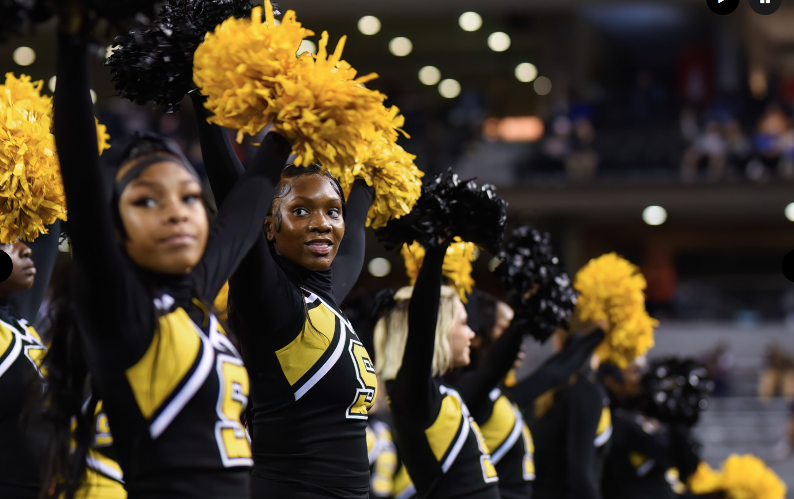
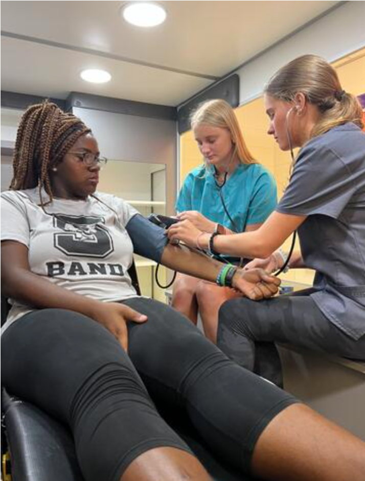
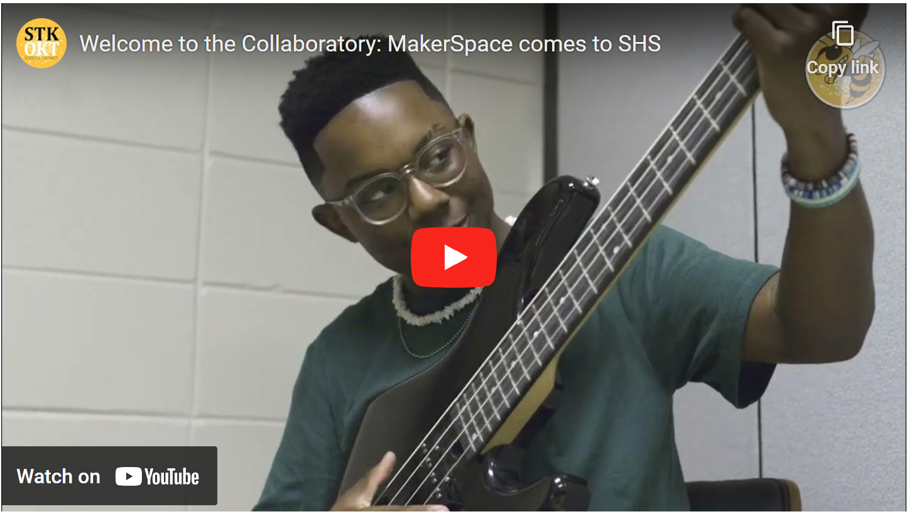

Starkville High School
Starkville High School offers serves all 9th-12th grade students in the Starkville Oktibbeha School District and offers a high school experience rich in academics, arts, athletics and extra-curricular activities. Anchored by a dynamic and award-winning staff, SHS is committed to providing each student with a personalized education in a student-centered, 21st century learning environment that inspires critical thinking, problem solving, collaboration and communication.
Academics
The Starkville High School curriculum centers around the district's college and career academy model, the Academic Houses at SHS. Students may choose from 17 career pathways organized in three Academic Houses: Technology, Engineering and Construction (TEC), Health & Human Services (H2S) and Communication, Arts and Business (CAB). Through small learning communities organized around career interests, students experience hands-on, engaging and relevant learning experiences that connect the classroom to the workplace. Real-world experiences like job shadowing, site visits and student internships leverage students' personal interests to prepare them for excellence after high school -- whether their goals are college, the military, entrepreneurship or the workforce.
Partnered with the Millsaps Career & Technology Center, located on the SHS campus, Starkville High offers an array of CTE course offerings that enable students to graduate with Mississippi's CTE Endorsement. In addition, students may pursue academic diploma endorsements through a multitude of Advanced Placement and Dual Enrollment course offerings. The MSU Early Honors Academy is a partnership with the Mississippi State University Shackouls Honors College designed to challenge advanced learners during their senior year. In addition, SHS offers embedded ACT prep, and all students take the exam in both 10th and 11th grade.
Arts
Jackets can pursue their interests in the arts through award-winning fine arts, choral music, theatre, band and piano instruction. The arts programs at Starkville High School offer students real-world experiences in the visual and performing arts that garner yearly statewide and national acclaim.
Acitivties
Students can pursue their passion, discover their purpose and achieve their potential through more than 25 clubs and nationally affiliated skills-based, honors, and service organizations available on campus. SHS Ambassadors serve as the school's tour guides and information source for students and families. Student Government offers an array of leadership opportunities that allow students first-hand involvement in shaping student life at SHS. Each CTE pathway and Academic House offers nationally affiliated organizations centered around career interests that provide resume-building opportunities for service and mastery of skills. Honors organizations like BETA Club, National Honor Society and National Technical Honor Society provide opportunities for students who excel in the classroom. Click here for a list of extracurricular clubs and activities offered at Starkville High School.
Athletics
Home of the 2022 State Football Champion Yellow Jackets, the Starkville High School fanbase supports 20 sports with student pep rallies, parades, events and a vibrant home team "Nest" at each athletic venue.
Makerspace
The newest Jacket MakerSpace -- The Collaboratory at SHS -- features an impressive collection of low-tech and high-tech equipment to facilitate creativity and collaboration as SHS students pursue their passion, purpose and potential. The space offers a full podcasting, music and production studio complete with green screen, keyboard, percussion trap set and electric guitars, as well as sewing machines, laser engraver, tshirt and hat sublimation, 3D printer and more! We can't wait to see The Collaboratory serve as an icubator for ideas, allowing our students to stretch their creative skills, learn new technologies, and even launch fundraisers and business opportunities.